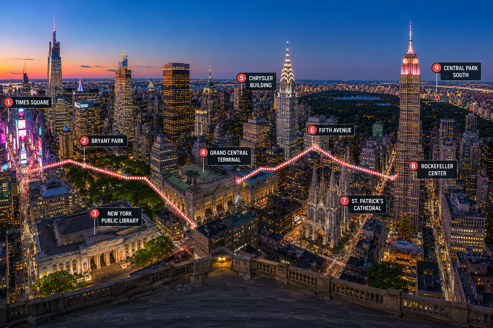
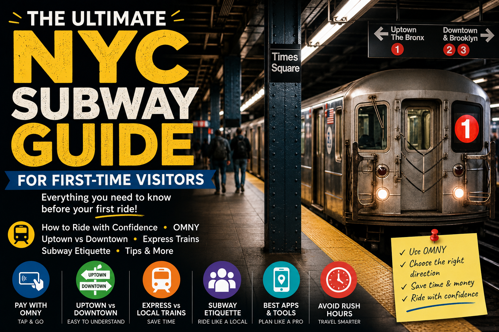
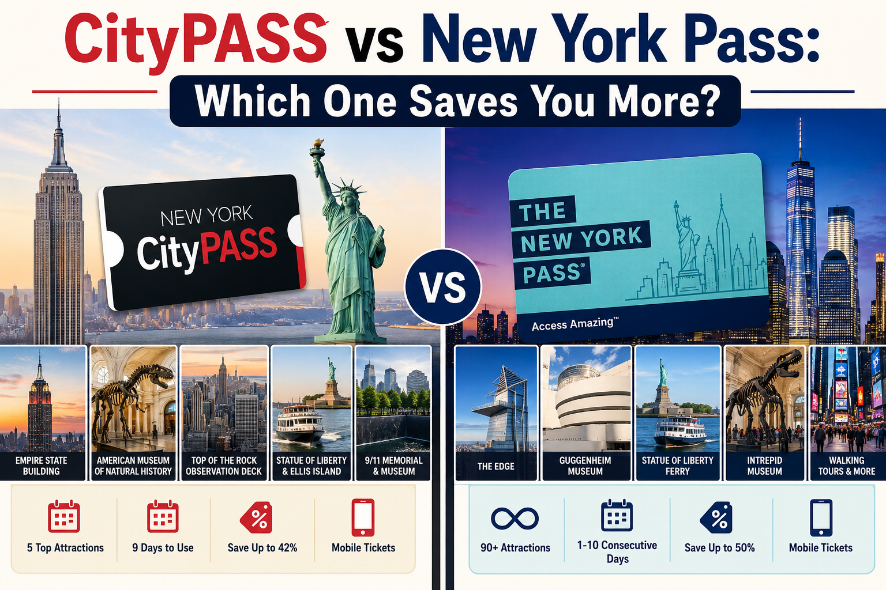
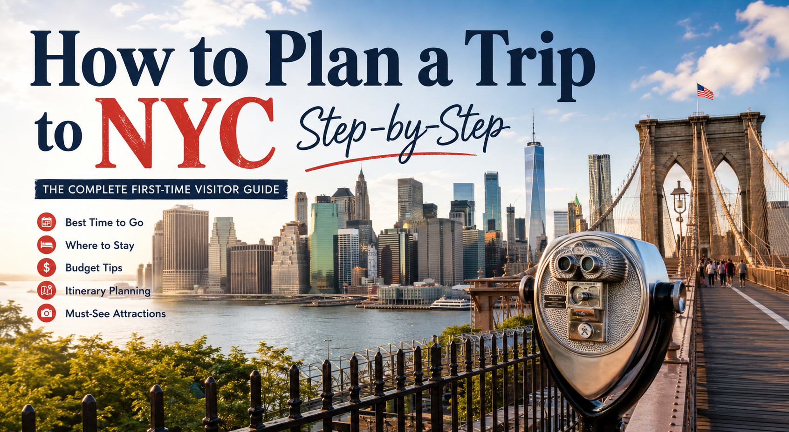

Real NYC advice, tested in the city — not written from a desk.
Budgeting, transportation, observation decks, scams to dodge, and itineraries that actually hold up once you're standing in Times Square at 4pm with sore feet.

The Only Lower Manhattan Walking Itinerary You'll Need (From Someone Who's Done It Wrong First)
Battery Park to DUMBO, south to north, timed right — with the hidden gems, bathroom map, and mistakes most guides never mention.

Best Walking Tours in NYC: 9 Tours Actually Worth Booking
SoHo, Brooklyn Bridge, Central Park, Harlem, Greenwich Village and more — with affiliate links, insider tips, and honest verdicts for every tour.
7 Best Food Tours in New York City (Tested & Reviewed)
Chinatown, Greenwich Village, Chelsea Market, Brooklyn, Lower East Side — which NYC food tour is actually worth booking?

The Ultimate Midtown Manhattan Walking Itinerary: Times Square to Central Park
9 stops, ~4 miles, mostly free. A logical northbound route with timing, photography tips

Is Top of the Rock Worth It? Honest Review & Visitor Tips
Three floors explained, best time to visit, blue hour strategy, photography tips, and the 10 mistakes most visitors make.

Is the Empire State Building Worth It? An Honest Visitor Guide
86th vs 102nd floor, best times to visit, express pass, photography tips, and what most travel guides won't tell you.

I Wish Someone Had Explained the NYC Subway Like This
OMNY, uptown vs downtown, express vs local, etiquette, safety, and the 6 mistakes everyone makes on their first ride.

CityPASS vs New York Pass: Which NYC Attraction Pass Is Worth It?
An honest comparison of attractions, pricing, validity, and hidden limitations — plus which pass actually saves money for your travel style.

How to Visit the Statue of Liberty & Ellis Island
Ticket types, ferry tips, how much time to allow, insider photography advice, and the mistakes that cost visitors hours.

25 Mistakes First-Time NYC Tourists Make (And How to Avoid Them)
From choosing the wrong hotel and wasting hours on the subway to tourist traps and overplanning every day — how to avoid all of them.

How to Plan the Perfect NYC Itinerary — A Complete 10-Part System
Neighborhood grouping, attraction priorities, reservation timing, transportation, budgeting, and where to stay — the complete planning system.

25 Free Things to Do in NYC (That Are Actually Worth Your Time)
From the Brooklyn Bridge to Central Park, the timing tricks and insider tips most tourists miss.

9 NYC Trip Fails I Wish I'd Known About (So You Don't Repeat Them)
Overpacking your itinerary, bad shoes, and a $47 weather mistake — the real lessons from a rookie NYC trip.

How I Saved Money on My NYC Trip Without Missing Anything
Flight timing, hotel neighborhoods, the OMNY fare cap, and the food swaps that cut a real NYC budget in half.

Is Edge NYC Worth It? My Honest Take on the Edge Observation Deck
The glass floor, the crowds, the best time to go, and how it really compares to Top of the Rock and the Empire State Building.

Is This the Best Food Tour in NYC? My Greenwich Village Experience
Six stops, one secret dish, and an honest breakdown of whether a guided food tour is worth it on your first trip.

NYC Scams Tourists Still Fall For (And How to Walk Right Past Them)
The free bracelets, the airport "taxi" guys, the fake Statue of Liberty tickets — the patterns behind every NYC street scam.

Top Things to Do in NYC—Ranked by Experience, Not Popularity
17 things ranked by how they actually feel to do, from walking without a plan to rooftop bars at sunset.

The Realistic NYC Bucket List (What You Can Actually Do in 5–7 Days)
A day-by-day breakdown built around neighborhoods, not attractions — plus what most lists get wrong.

The MetroCard Is Almost Dead — What Every Tourist Needs to Know in 2026
OMNY, the weekly fare cap, getting in from every airport, and every other way to get around the city.

Comparing NYC Observation Decks: Edge vs Top of the Rock vs Empire State
Three decks, three personalities — plus three ready-made one-day itineraries to combine them.
The Ultimate NYC Bucket List Map
250+ pre-pinned attractions, food spots, and hidden gems across all five boroughs, organized by neighborhood so you can see what's nearby in real time.
Get the Map